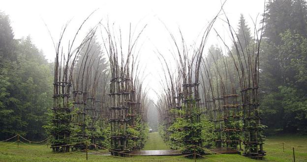

Cattedrale Vegetale
Bergamo, północne Włochy. Czterdzieści dwie kolumny, sześćset pięćdziesiąt metrów kwadratowych powierzchni. Prawdziwa pięcionawowa bazylika. I ani jednego kamienia, ani jednej cegły. Powstaje żywa, kwitnąca katedra.
Podobna struktura narodziła się w Valsugana w roku 2002, jako część projektu Arte Sella (na zdjęciu poniżej). W Wielkiej Brytanii obejrzeć można Whipsnade Tree Cathedral w Bedfordshire (z roku 1932) oraz Cathedral of Trees w Newlands, wzorowaną na katedrze w Norwich.
Czyżby idea Rilkego, jakoby średniowieczni budowniczowie „swoich katedr olbrzymich masę, moc i brzemię” wieszali Stwórcy „jak ciężary, by przeszkodzić jego wniebowstąpieniu”, znalazła ostateczną realizację? Tym razem dzięki dosłownemu w ziemi zakorzenieniu?